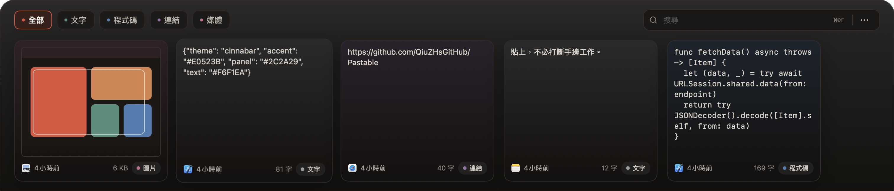

PASTABLE · MACOS 剪貼簿浮層
呼出即貼，
不打斷手邊工作。
全螢幕寬的底部浮層，覆蓋在任意 App 之上。
開啟時不搶鍵盤焦點，輸入繼續留給你正在寫的那一頁。
⌘⇧V
隨時呼出
Q4 LAUNCH / DRAFT 03
發布計畫
把桌面端剪貼簿的使用路徑，縮短到一次呼出。使用者不必先理解產品概念，只需要知道：按一下快捷鍵，最近複製的東西就從螢幕底部出現。
本週
- 首頁文案：不打斷手邊工作
- 週四前提交 1.2.1
備註：發布前再跑一次 3 秒測試。
鍵盤焦點還在這裡
